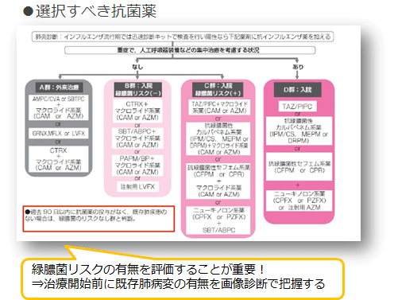

<!doctype html>
<html>
<head>
<meta charset="utf-8">
<meta name="viewport" content="width=device-width">
<title></title>
<link rel="stylesheet" href="css/style.css">
</head>

<body>

<header>
  <div class="l"><a href="javascript:history.back();"><span>left</span></a></div>
  <p class="title"><a href="index.html">社外秘 研修資料</a></p>
  <div class="r"><a href="329.html"><span>right</span></a></div>
</header>

<div class="wrap">
  <div class="clearfix">

</div>
  <!--タイトルエリア-->
  <section>
    <h1 class="tit">細菌性肺炎</h1>
  </section>
  <!--タイトルエリア-->

  <!--ボックス-->
  <section>
      <p class="txt">
        <u><strong>肺炎の兆候が認められたときの初期対応</strong></u><br>
        トシリズマブ使用ガイドラインに従い、適切な検査、診断、処置が必要。アクテムラ投与は一旦中止し、身体所見（特にSpO2、安静時だけでなく、運動負荷後が重要）、胸部X線、必要に応じてCT検査、臨床検査を行う。画像診断にて限局性陰影かびまん性陰影か、実質性陰影か間質性陰影を判定し、限局性かつ実質性である場合には細菌性肺炎を疑い、喀痰検査、尿中抗原キット（肺炎球菌、レジオネラ菌の疑いがある場合）などで起因菌を同定しつつ、抗菌薬治療を開始する。<br>

        <u><strong>RA患者の肺炎治療・選択すべき抗菌薬</strong></u><br>
        想定すべき原因菌は、肺炎球菌、インフルエンザ菌、黄色ブドウ球菌、モラクセラ、クレブシエラ、緑膿菌などの一般細菌と肺炎マイコプラズマ、レジオネラ、肺炎クラミジアなどの非定型病原体ならびにインフルエンザウイルス（流行期）。<br>
        気管支拡張症、間質性肺炎などの既存の肺疾患を有する場は、緑膿菌、肺炎球菌、インフルエンザ菌を念頭におくことが重要。<br></p>

           <div class="img"></div>
           <p class="txt">
        <u><strong>リスク因子の把握と予防</strong></u><br>
        リスク因子：高齢、罹病期間、ステロイド使用、肺の基礎疾患など<br>
        予防：マスク、手洗い、うがい、歯周病の治療、口腔ケア、慢性副鼻腔炎の治療、糖尿病コントロール、アルコールの適量、禁煙、インフルエンザワクチン、肺炎球菌ワクチン
      </p>

<p class="text sml right">生物学的製剤と呼吸器疾患診療の手引き（日本呼吸器学会）より</p>
  </section>
  <!--ボックス-->
</div>

<footer>
  <div class="l"><a href="javascript:history.back();"><span>left</span></a></div>
  <div class="home"><a href="index.html"><span>HOME</span></a></div>
  <div class="r"><a href="329.html"><span>right</span></a></div>
  <div class="pagetop"><a href="javascript:scroll(0,0);">pagetop</a></div>
</footer>

<script src="https://ajax.googleapis.com/ajax/libs/jquery/1.8.2/jquery.min.js"></script>
<script src="js/common.js"></script>
</body>
</html>
